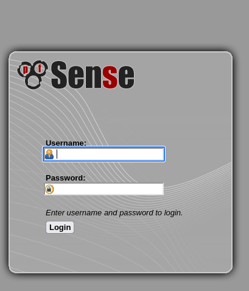
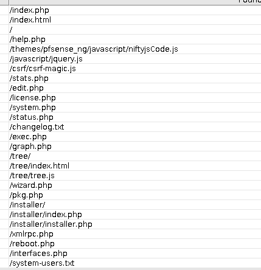
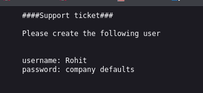
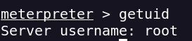

I start by performing a full TCP port scan against the target in order to identify exposed services and gather version information.
nmap -sVC -p- --open -sS --min-rate 5000 -v -n --stats-every=5s -Pn -oN sense_scan <IP>The scan reveals two open ports. Port 80 is running an HTTP service, and port 443 is running HTTPS. Both services are hosted by lighttpd 1.4.35.
While browsing the web application, I immediately identify a login page exposed on the web server.

Based on the interface and response headers, it becomes clear that the web application is a pfSense firewall web interface.
At first glance, the application might appear vulnerable to client-side issues such as XSS. However, my focus shifts to directory enumeration in order to identify misconfigurations or sensitive files exposed by the server.
gobuster dir -w /usr/share/wordlists/dirbuster/directory-list-2.3-medium.txt -u http://<IP> -b 301 -x txt,php,htmlAs an alternative and more exhaustive approach, I also consider using DirBuster to enumerate directories over HTTPS.
dirbuster -u https://10.10.10.60 -t 20 -l /usr/share/wordlists/dirbuster/directory-list-2.3-medium.txt -r sense-10.10.10.60/dirbuster_dir-med -e php,txt,htmlThe enumeration process reveals several interesting paths, one of which exposes sensitive information.

Among the discovered files, I find credentials stored in plaintext.

Using these credentials, I am able to authenticate successfully into the pfSense dashboard.
rohit:pfsenseWith valid administrative access to the pfSense web interface, I look for known vulnerabilities that can be leveraged for remote code execution.
Since I have access to the graphing functionality, I can abuse a known vulnerability using a Metasploit module designed for pfSense.
The module exploit/unix/http/pfsense_graph_injection_exec is suitable in this scenario, as it allows command injection through the graphing feature.
After launching the exploit, I successfully obtain a Meterpreter session on the target system.

The Meterpreter session provides sufficient privileges to access both the user and root flags. With full control over the system, the machine is successfully compromised.